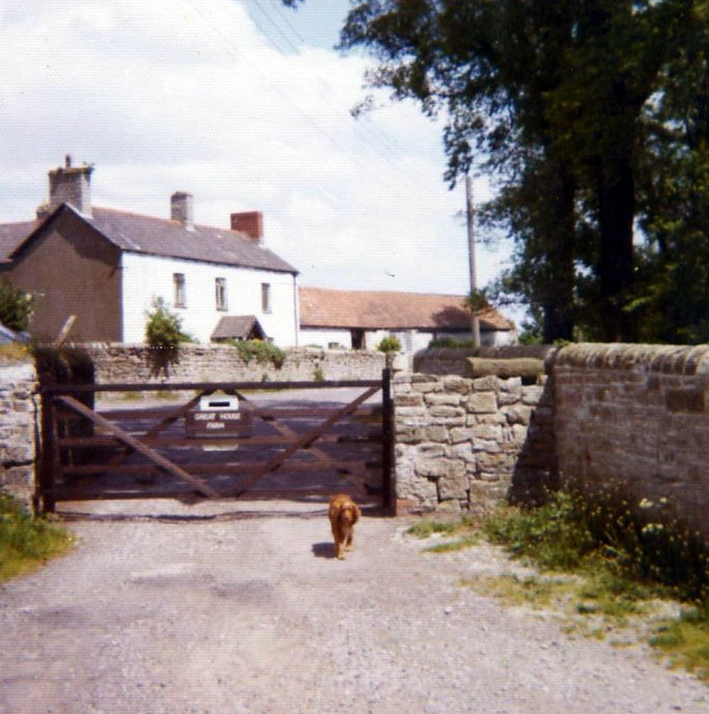

About this book
This book has one subject: the events at Great House Farm (Tŷ Mawr), Llandough, that left a mark in a police, court or press record. It tells them in date order, and it tells them only as the records show them.
The story of this farm is large, and its threads run into one another: who held the land and why, the court cases, the age and value of the building, the family who lived there. Those threads have their own books in this library. Here they appear only where a record of an incident needs them.
How to read a record card
Each event is given as a card with five parts:
the date of the record, as exact as the record allows;
the record: the newspaper, broadcast, court or police source, with its number in the Legal Wiki’s Evidence Register (EV-0000);
the words of the record, quoted exactly, where the words survive;
what the record shows, in plain words;
what it does not show: the limits of that record.
Most press items of 1988 and 1989 survive only as search-result extracts from the British Newspaper Archive: a line or two of machine-read text around a search word. The cards say so where that is the case.
A caution kept throughout
A charge is not a conviction, and a newspaper report is not a court finding. This book names nobody as having committed a crime unless a conviction or a court finding is on the record. Where a newspaper printed someone’s own words, the card gives those words as the paper printed them.


The entrance to the farmyard, from the farm’s own album (Part 1, no. 100). Source: Wayback Vault, album image.